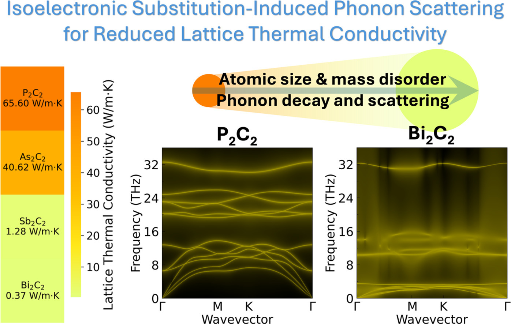

Selected Invited Talk
Examining Phonon Transport in High-Entropy Oxides: An Advanced Thermal Barrier Coating Material
Hosted by Prof. Sandip Kumar Saha, Department of Mechanical Engineering, Indian Institute of Technology Bombay, India.
Alloy Theory Laboratory
Research publications, group milestones, professional service, awards, talks, and media coverage.
Latest news
Missaka Sooriyaarachchi will join the group for doctoral research in computational materials science and alloy theory.
Dr. Sharma joins the Department of Mechanical Engineering and the School of Energy Resources as an Assistant Professor.
“Direct observation of surface local chemical ordering in CoCrFeMnNi high-entropy alloys” is published.
Recognized as an Exceptional Reviewer by Materials, appointed to the Extended Advisory Board of Carbon, and appointed to the Early Career Editorial Board of Condensed Matter.
Received a Special Mention in the 2025 Carbon Journal Prize for research on two-dimensional MXene-based materials.
“Influence of Isoelectronic Mass Modulation on Phonon Decay and Transport in Layered Pnictogen-Carbon Systems” is published.

Professional record
Examining Phonon Transport in High-Entropy Oxides: An Advanced Thermal Barrier Coating Material
Hosted by Prof. Sandip Kumar Saha, Department of Mechanical Engineering, Indian Institute of Technology Bombay, India.